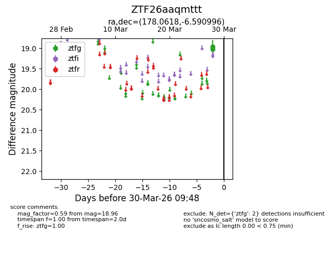
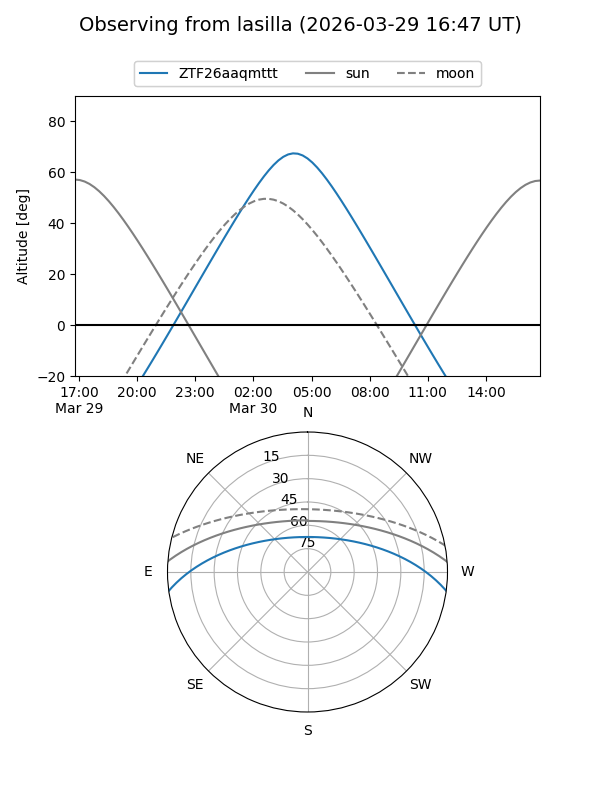
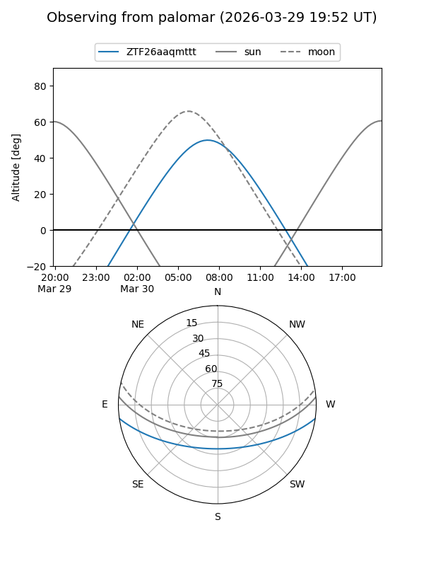

ZTF26aaqmttt
Target ZTF26aaqmttt at 2026-03-30 09:51
Aliases and brokers:
FINK: link
Lasair: link
ALeRCE: link
alt names
ZTF26aaqmttt (ztf,fink_ztf)
Coordinates:
equatorial (ra, dec) = 178.0618,-6.59100
equatorial (HMS+DMS) = 11:52:14.82,-06:35:27.59
galactic (l, b) = (277.7695,+53.36423)
Flags:
Photometry:
last ztfg=18.96
2 ztfg detections
Lightcurve

Visibility


Additional plots